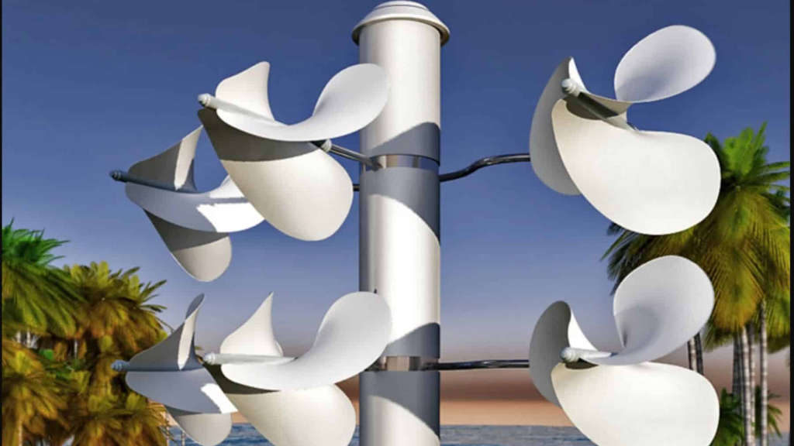
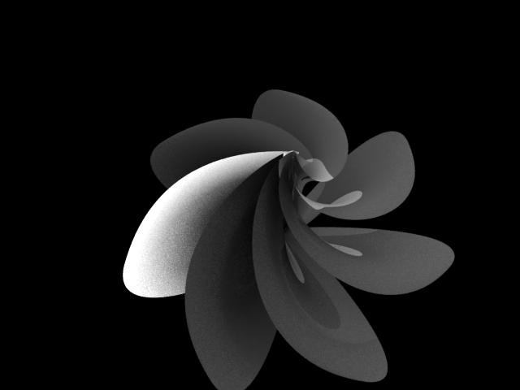
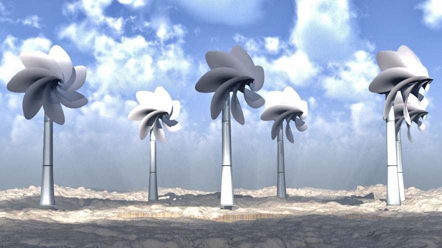
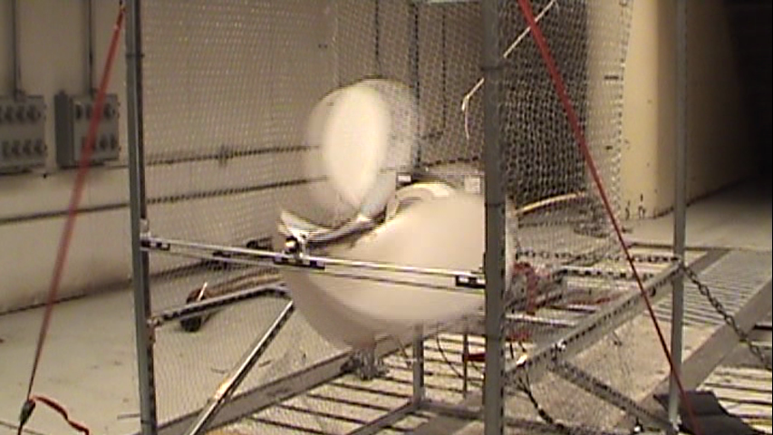
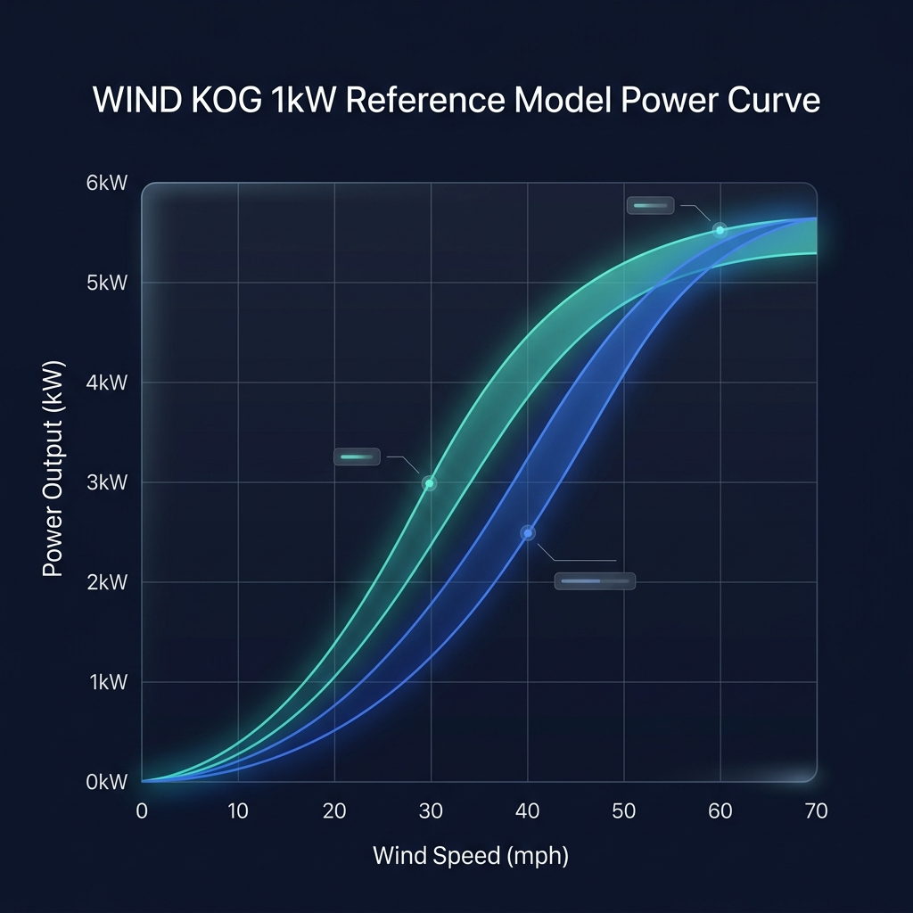

Powering the Future
from the Past
Decoupling mechanical rotation from power generation. Our advanced kinetic connections and ultralight WindBrella turbines shield sensitive components from the elements.
Core Innovations
Click any card below to pop open its high-resolution blueprints, technical specs, and photos directly in-page.
WindBrella Turbines
Ultralight, high-tech WindBrella rotors engineered to transform traditional heavy plastic blades into sensitive, responsive multi-petal structures.
Kinetic Connections
Decoupling wind capture from power generation. Mechanical torque linkages transmit power to ground level, keeping generators 100% free of weather.
Utility Platforms
Scaling the weatherproof revolution. We integrate WindBrella geometries and ground-based generators into highly scalable utility platforms.
STEM Education
Standardizing wind science. Academic curricula and hands-on builds designed around KOG fluid dynamics and decoupled power models.
Technical Specifications
Select a technology card above to review engineering specifications, parameters, and diagrams.
Designed to be Seen
The Windstrument turbine combines fluid aerodynamics with organic, flower-like geometry to create a clean-energy solution that coexists beautifully with human environments.


Original Blueprints
Proprietary 2010 engineering blueprints approved by Peak Industries.

Vortex Rotor Geometry
Complex overlapping curves inspired by natural spiral shapes.

Field Landscape Render
Elegant orchid-like wind farm blending beautifully with the horizon.

Physical Validation
Physical prototype spinning in high-stress wind tunnel testing.
Technical History
The evolutionary design and validation history of the Kinetigy Optimized Generator.
Genesis & Theoretical Modeling
The project initiated with mathematical modeling focused on reducing mechanical cogging torque and maximizing low-speed starting efficiency. Early efforts drafted theoretical generator stator configurations to decouple drivetrain forces.
Prototype Dynamometer Testing
Constructed the Gen-1 prototype casing and conducted precise laboratory dynamometer analysis to isolate electrical friction losses. The results successfully validated the base mechanical architecture under constant loading patterns.
Ford Jacobsen Wind Tunnel validation
Conducted extensive aerodynamic tests inside the Ford Jacobsen wind tunnel, subjecting the Windstrument turbine and structural columns to linear wind vectors scaling from 0 to 70 mph to establish peak mechanical load thresholds.
Performance & Separation Curve Analysis

Wind tunnel data successfully mapped the 1kW, 500W, and 100W performance curve baselines. The sessions validated that decoupling mechanical wind rotation from the weatherproof generator using WindKOG's kinetic connections maintains full efficiency while ensuring electrical systems remain shielded from the outdoor elements.
STEM Classroom Kits
Bringing advanced fluid dynamics and weatherproof generation models into primary, secondary, and college labs.
KOG Micro-Generator Kit
A high-visibility, transparent educational turbine rig. Students wrap custom stators and coils, physically observing Faraday's law, magnetic induction, and gear conversions first-hand.
Digital Anemometer Build
Combine physics with code. Students assemble a rotational cup wind speed sensor, writing basic Arduino scripts to calculate linear velocities and display telemetry on a LCD screen.
Blade Pitch Testing Rig
An advanced aerodynamics lab tunnel. Students analyze variable pitch angles, surface area drags, and multi-petal lift properties to calculate coefficients of power and lift scaling.